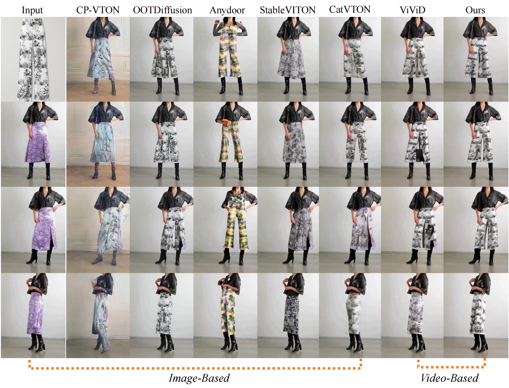
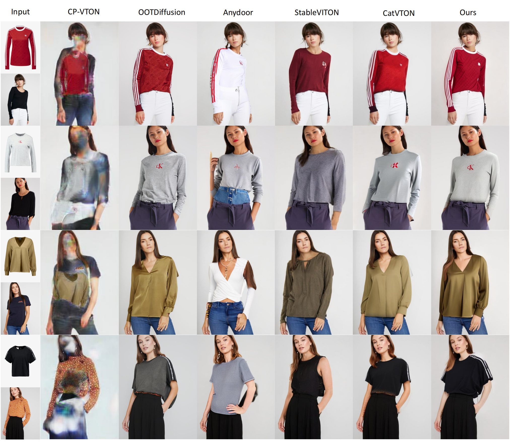
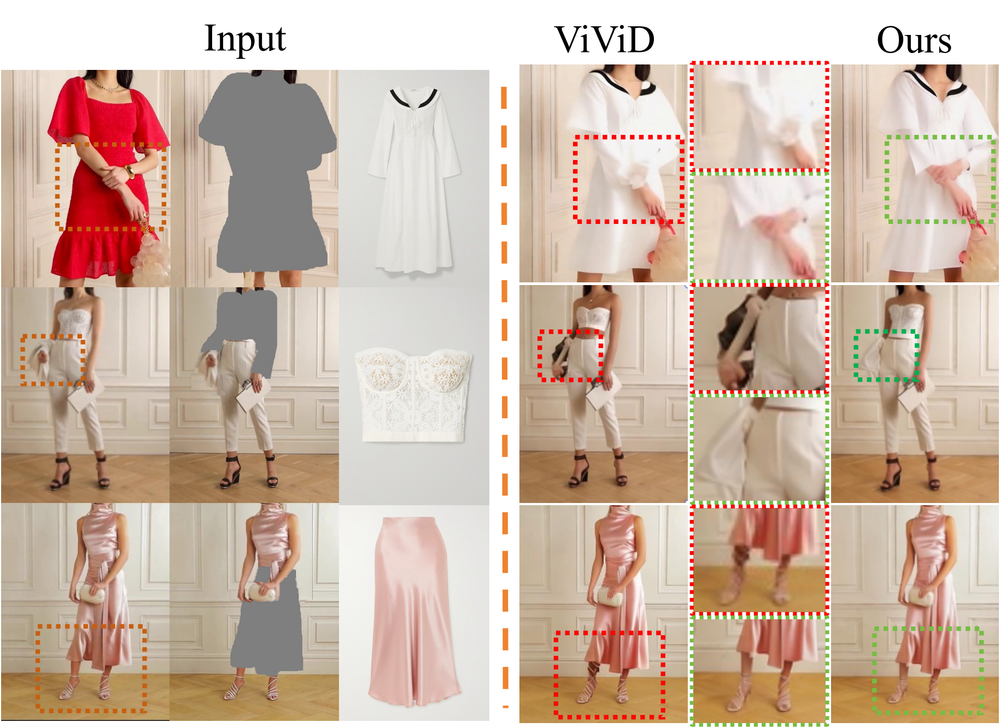
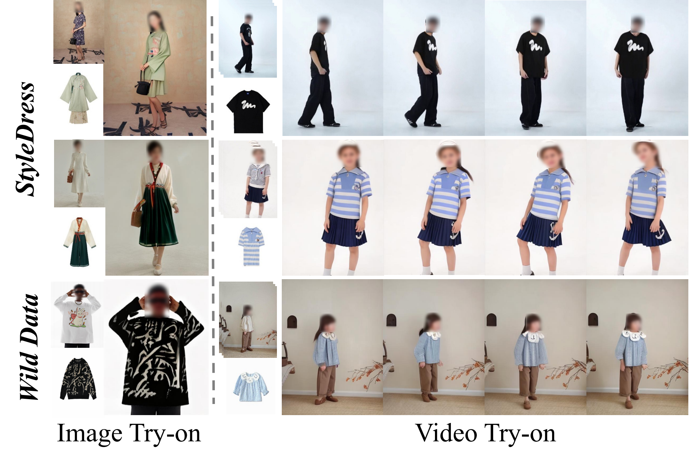
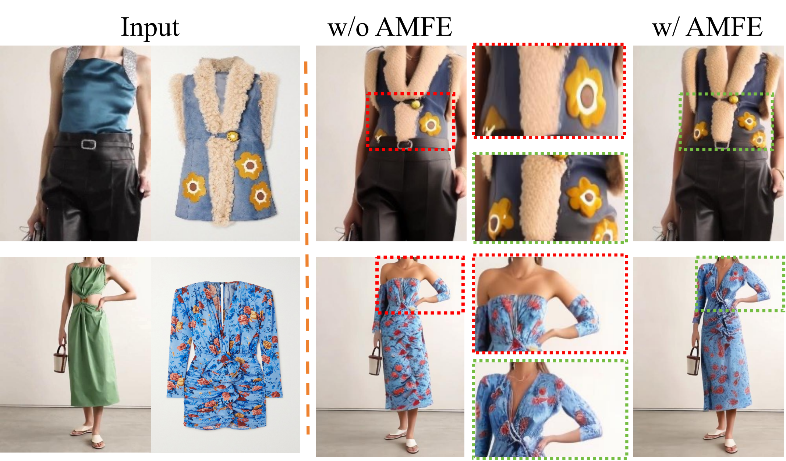
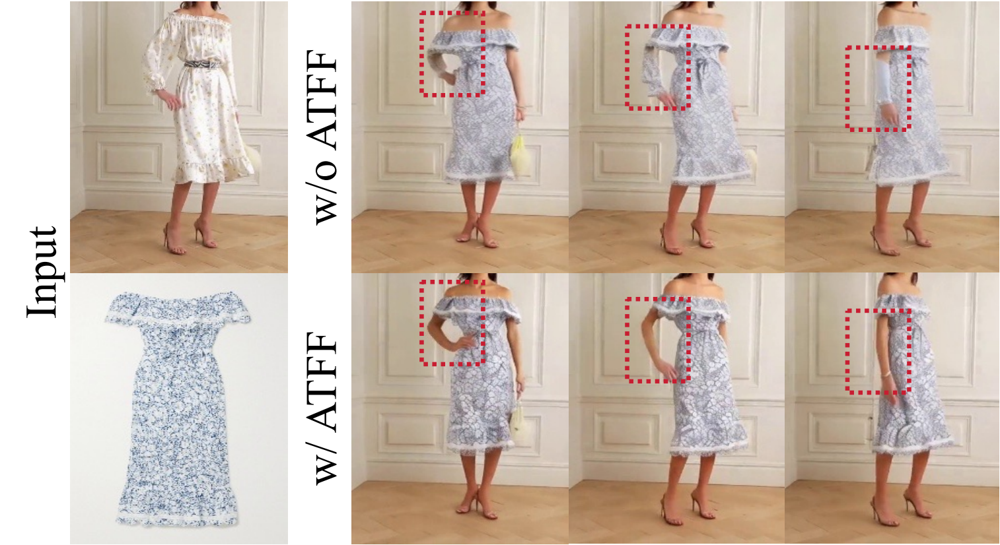
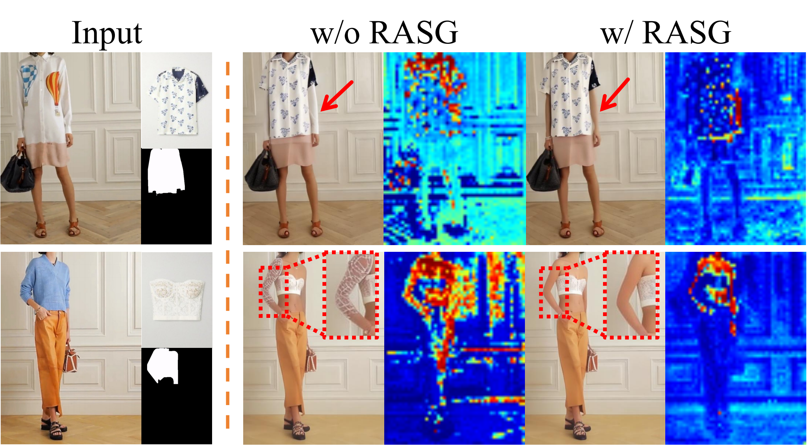

ChronoTailor excels at generating high-quality virtual try-ons for diverse garments, effectively maintaining visual coherence and preserving background details.
Abstract
Video virtual try-on aims to seamlessly replace the clothing of a person in a source video with a target garment. Despite significant progress in this field, existing approaches still struggle to maintain continuity and reproduce garment details.
In this paper, we introduce ChronoTailor, a diffusion-based framework that generates temporally consistent videos while preserving fine-grained garment details. By employing a precise spatio-temporal attention mechanism to guide the integration of fine-grained garment features, ChronoTailor achieves robust try-on performance.
First, ChronoTailor leverages region-aware spatial guidance to steer the evolution of spatial attention and employs an attention-driven temporal feature fusion mechanism to generate more continuous temporal features. This dual approach not only enables fine-grained local editing but also effectively mitigates artifacts arising from video dynamics.
Second, ChronoTailor integrates multi-scale garment features to preserve low-level visual details and incorporates a garment-pose feature alignment to ensure temporal continuity during dynamic motion. Additionally, we collect StyleDress, a new dataset featuring intricate garments, varied environments, and diverse poses, offering advantages over existing public datasets, and will be publicly available for research. Extensive experiments show that ChronoTailor maintains spatio-temporal continuity and preserves garment details during motion, significantly outperforming previous methods.
Overview of ChronoTailor
ChronoTailor aims to generate temporally coherent virtual try-on videos while preserving fine-grained garment details.
ChronoTailor consists of two main components: (1) Spatial-Temporal Attention Guidance, which includes Region-Aware Spatial Guidance (RASG) that uses segmentation masks to guide spatial attention map evolution, and Attention-Driven Temporal Feature Fusion (ATFF), which employs an asymmetric cross-space attention mechanism using original features as queries and randomly fused other frame features as key-values to integrate temporal information effectively.
(2) Multi-scale Garment-Pose Feature Alignment, which first applies Adaptive Multi-scale Feature Extraction (AMFE) to enhance low-level garment details, and then aligns garment features with pose features using Garment-Pose Feature Alignment (GPFA).
Architecture of the ChronoTailor. Spatial-Temporal Attention Guidance enables the acquisition of stable guidance for garment feature injection. Multi-scale Garment-Pose Feature Alignment, meanwhile, facilitates the capture of more precise garment information during motion.
Sample pairs from the StyleDress.
Visualization of Methods

Visual comparison of ours and other methods. Our method demonstrates superior capability in generating clearer texture details within the editing region, producing more plausible results that exhibit enhanced visual fidelity and structural coherence.

Qualitative comparison on the VITON-HD dataset.

ChronoTailor effectively preserves information in non - edited regions.

Qualitative results of our method on the StyleDress dataset.

Ablation study of Adaptive Multi-scale Feature Extraction. The upper garment try-on fully recovers two floral patterns, demonstrating ChronoTailor’s capability to preserve intricate textures and semantic details.

Ablation study of Attention-Driven Temporal Feature Fusion.

Ablation study of Region-Aware Spatial Guidance.Our method balances attention between editing and non - editing regions.
More Results
Visual comparison of ours and other methods. Our method demonstrates superior capability in generating clearer texture details within the editing region, producing more plausible results that exhibit enhanced visual fidelity and structural coherence.
Qualitative comparison on the VITON-HD dataset.
BibTeX
@article{wang2025chronotailor,
title={ChronoTailor: Harnessing Attention Guidance for Fine-Grained Video Virtual Try-On},
author={Wang, Jinjuan and Sun, Wenzhang and Li, Ming and Zheng, Yun and Li, Fanyao and Tao, Zhulin and Di, Donglin and Li, Hao and Chen, Wei and Huang, Xianglin},
journal={arXiv preprint arXiv:2506.05858},
year={2025}
}
}